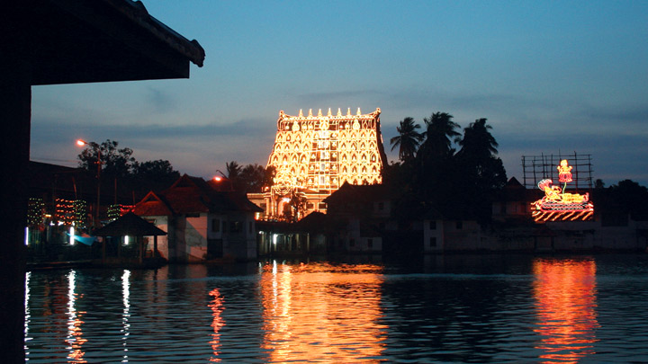

Thiruvananthapuram


Located in the southwestern tip of India, Thiruvananthapuram is bound by the Arabian Sea in the west and Tamil Nadu in the east. Named after Anantha Padmanabha or Lord Vishnu, the city is home to many ancient temples. But the landmark is the Sree Padmanabha Swamy Temple around which the city has been built on seven low hills. The wooded highlands of the Western Ghats in the eastern and northeastern borders give Thiruvananthapuram some of the most enchanting picnic spots. A long shoreline with internationally renowned beaches, historic monuments, backwater stretches and a rich cultural heritage make this district a much sought-after tourist destination. Clean and green, Thiruvananthapuram, the capital of Kerala is one of the most beautiful cities in the country.
Top Destinations
Kovalam

Kovalam is an internationally renowned beach with three adjacent crescent beaches. It has been a favourite haunt of tourists since the 1930s. A massive rocky promontory on the beach has created a beautiful bay of calm waters ideal for sea bathing.
The leisure options at this beach are plenty and diverse. Sunbathing, swimming, herbal body toning massages, special cultural programmes and catamaran cruising are some of them. The tropical sun acts so fast that one can see the faint blush of coppery tan on the skin in a matter of minutes. Life on the beach begins late in the day and carries on well into the night. The beach complex includes a string of budget cottages, Ayurvedic health resorts, convention facilities, shopping zones, swimming pools, Yoga and Ayurvedic massage centres.
Accommodation facilities for tourists at Kovalam range from five star hotels to budget hotels and the choice of food available at restaurants and cafeterias range from Continental varieties to South Indian delicacies.
Thiruvananthapuram, the capital city of Kerala, is just 16 km away from Kovalam and getting there is no hassle. But if you are on holiday it is better to stay in Kovalam and visit the city. The city of Thiruvananthapuram has many interesting places to see like the Napier Museum, the Sri Chitra Art Gallery and the Padmanabhaswamy Temple. The SMSM Institute, a State owned handicrafts emporium, is the ideal place to pick up ethnic curios and other articles.
Nearest railway station: Thiruvananthapuram Central, about 16 km
Nearest airport: Trivandrum International Airport, about 10 km
Ponmudi
Locals in the capital city of Thiruvananthapuram will declare that a weekend drive to Ponmudi is among the best ways to spend time in the city. Families and friends alike are known to go on long drives up the winding paths for a view they insist rivals any other in the State. The slopes shrouded in mist fill one with a feeling of wonder and amazement. A large amount of rare flora and fauna can be seen here including mountain flowers, wild orchids and exotic butterflies.
The temperature is equable throughout the year and the three hour drive from the city is justified once the valley comes into view. One can always stopover at the breath-taking Kallar River on the way, which flows parallel to the road in the opposite direction, with the picturesque Meenmutty Waterfalls only a little distance ahead. A large number of cottages and resorts have come up in the area. The tree house view tower is another great place to visit. Ponmudi is indeed a rising hotbed of tourist activity. A hill so close to the city, yet nestled so near the protective arms of the sea.
Trekking trails of VarayadumottaPonmudi offers beautiful trekking trails to many other wonders of nature hidden away from the casual eyes. All day you can walk through the promising trails with greater excitements. Trekking to Varayadumotta, the most popular trekking trail in Ponmudi offers the panoramic view of the hills along with the Nilgiri Tahrs. Considered as one of the toughest in Trivandrum, it is 18 km trek (one side). Prior booking is needed to avail this package. Two guides will accompany the trekkers. Explore more
Getting thereNearest railway station: Thiruvananthapuram, about 61 km away Nearest airport: Trivandrum International Airport, about 67 km away
Varkala

Location: 51 km north of Thiruvananthapuram city in Thiruvananthapuram district and 37 km south of Kollam, south Kerala.
Varkala, a calm and quiet hamlet, lies on the outskirts of Thiruvananthapuram district. It has several tourist attractions that include a beautiful beach, a 2000-year-old Vishnu Temple and the Ashramam - Sivagiri Mutt a little distance from the beach.
The Papanasam Beach (also called as Varkala Beach), which is ten kilometers away from Varkala, is renowned for a natural spring, which is considered to have medicinal and curative properties. A dip in the holy waters at this beach is believed to purge the body of impurities and the soul of all sins; hence the name 'Papanasam Beach'.
A two thousand-year-old shrine the Janardhanaswamy Temple stands on the cliffs overlooking the beach, a short distance away. The Sivagiri Mutt, founded by the great religious reformer and philosopher Sree Narayana Guru (1856 - 1928) is also close by. The Samadhi (the final resting place) of the Guru here attracts thousands of devotees every year during the Sivagiri Pilgrimage days - 30th December to 1st January. Sree Narayana Guru propagated the ideology: "one caste, one religion and one God", in a society torn by the taboos of caste system.
Varkala offers excellent accommodation facilities for tourists and is fast becoming a popular health resort with many Ayurvedic massage centres.
Attractions: Beach, mineral water springs, the Sivagiri Mutt and a 2000-year- old Vishnu Temple.
Getting thereNearest railway station: Varkala, about 3 km away
Nearest airport: Trivandrum International Airport, about 57 km away
Sree Padmanabha Temple
Located inside the East Fort in Thiruvananthapuram, the capital city of the State of Kerala in India is the Sree Padmanabha Swamy Temple dedicated to Lord Vishnu. This temple is a blend of the Kerala and Dravidian styles of architecture. It is believed to be the world’s richest temple.
Thiruvananthapuram, the capital city of Kerala takes its name from the presiding deity of the Sree Padmanabhaswamy Temple, who is also known as Anantha (one who reclines on the Serpent Anantha). The word 'Thiruvananthapuram' literally means - the Land of Sree Anantha Padmanabhaswamy. The temple stands close to the holy tank - Padma Theertham, which means 'lotus spring.'
The shrine is currently run by a trust headed by the erstwhile royal family of Travancore.
Worship time at the Sree Padmanabhaswamy temple
Morning hours:
03:30 a.m. to 04:45 a.m. (Nirmalya Darshanam)
06:30 a.m. to 07:00 a.m.
8.30 a.m. to 10:00 a.m.
10:30 a.m. to 11:10 a.m.
11:45 a.m. to 12:00 Noon
Evening hours:
05:00 p.m. to 06:15 p.m.
06:45 p.m. to 07:20 p.m.
Please note that the temple worship timings are subject to change during the festival occasion.
Dress code to be followed at the temple:
Only Hindus are permitted inside the temple.
There is a strict dress code that needs to be followed while entering the temple. Men need to wear mundu or dhoti (worn around the waist and going down up to the heels) and should not wear shirts of any kind.
Women need to wear sari, mundum neriyathum (set-mundu), skirt and blouse, or half sari.
Dhotis are available for rent at the temple entrance. Nowadays temple authorities allow wearing of dhotis over pants or churidhar to avoid inconvenience to the devotees.
For more details log on - www.sreepadmanabhaswamytemple.org
Getting thereNearest railway station: Thiruvananthapuram Central, about 1 km away
Nearest airport: Trivandrum International Airport, about 6 km away
Getting to Thiruvananthapuram
By road: Long distance buses operate from the Central Bus Station at Thampanoor, opposite the Railway Station Thampanoor KSRTC Bus Terminal Ph: 2323886. Short distance buses operate from the City Bus Station, East Fort Ph: 2575495
By rail: There are direct trains from Thiruvananthapuram to all the main towns in Kerala as well as the major cities in India. Railway enquiry Ph: 132
By air: Trivandrum International Airport (6 km from the city) has over 30 air links with convenient connections to Colombo, Maldives, Singapore and the Middle East. Indian Airlines and Jet Airways operate domestic flights to different parts of the country Airline offices: Airport Authority of India Ph: 2501424 • Indian Airlines, Mascot Jn Ph: 2316870, 2501537 • Jet Airways, Sasthamangalam Ph: 2721018 • Jet Airways (Airport) Ph: 2500710 • Air India, Vellayambalam Ph: 2310310, 2501426 • SriLankan Airlines Ph: 2471810 • Oman Airways, Kowdiar Ph: 2437017 / 18 • Kuwait Airways, Vellayambalam Ph: 2720013, 2500434 (Airport) • Saudi Arabian Airlines Ph: 2721321 • Silk Air Ph: 2554144, 255144, 2504141 • Qatar Airways Ph: 3919091, 3919092 • Kingfisher Ph: 2508822 • Etihad Airways Ph: 3010000-5 • IndiGo Ph: 2500239
Tourist Information Offices
- Tourist Facilitation Centre, Department of Tourism, Park View Ph: 2321132
- Tourist Information Centre, Railway Station, Thampanoor Ph: 2334470
- Tourist Information Centre, Domestic Airport Ph: 2501085
- Tourist Information Centre, International Airport Ph: 2502298
- Tourist Facilitation Centre, Kovalam - Ph: 2480085
- Tourist Reception Centre (KTDC), Thampanoor Ph: 2330031
- Central Reservations (KTDC), Hotel Mascot Ph: 2316736
- District Tourism Promotion Council (DTPC), Vellayambalam Ph: 2315397 Fax: 2313606,
- Website: www.dtpcthiruvananthapuram.com
Zone: North
Telephone Access Code: +91 471
Altitude: Sea level
Area: 2192 sq. km
Population: 3,234,356 (2011 census)